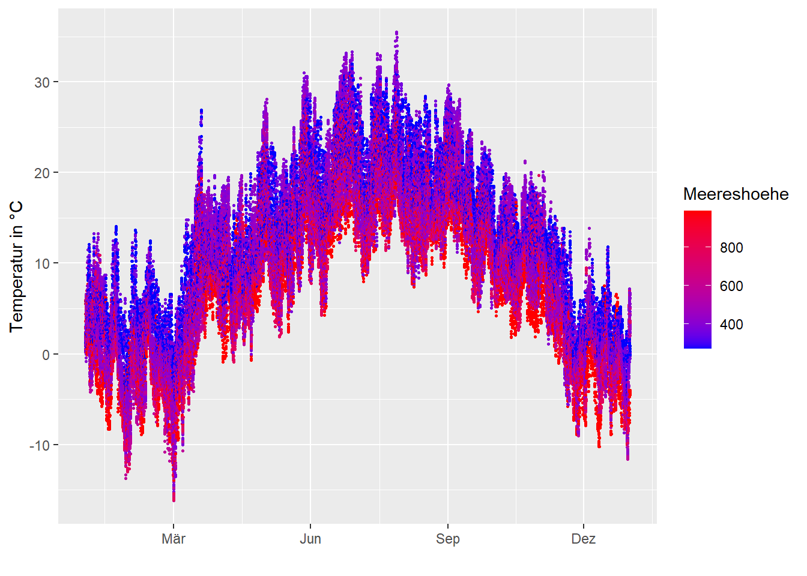
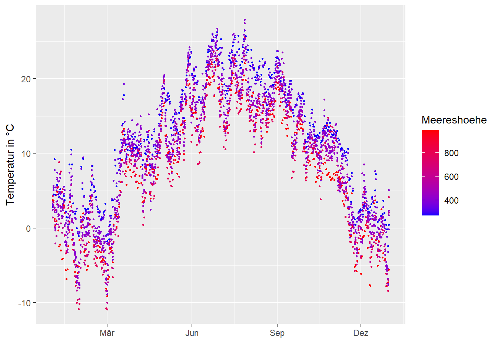
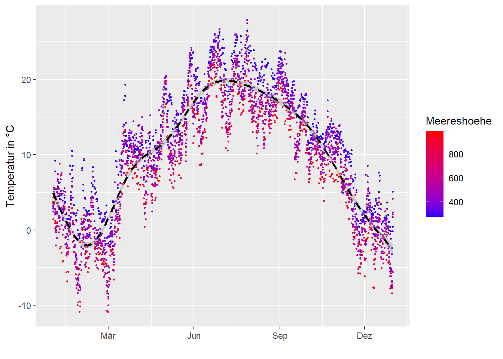
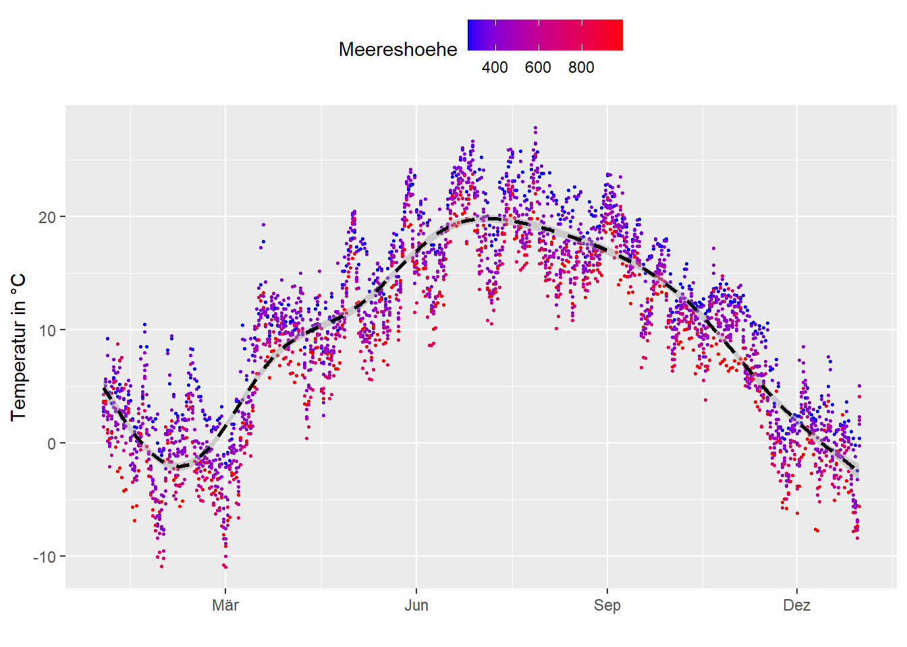

library("readr")
temperature <- read_delim("datasets/infovis/temperature_2005.csv", ",")Infovis 2: Übung optional
Für die optionale Übung brauchst du den Datensatz temperature_2005.csv. Dabei handelt es sich wieder um Temperaturwerte verschiedener Stationen, diesmal aus dem Jahr 2005. Das Datum ist so formatiert, dass R (insbesondere read_delim) es korrekt als datetime erkennen und als POSIXct einlesen sollte.
Aufgabe 1
Mache aus der wide table eine long table, die wie folgt aussieht.
Musterlösung
library("tidyr")
temperature_long <- pivot_longer(temperature, -time, names_to = "station", values_to = "temperature")
knitr::kable(head(temperature_long))| time | station | temperature |
|---|---|---|
| 2005-01-01 | ALT | 1.3 |
| 2005-01-01 | BUS | 1.5 |
| 2005-01-01 | GVE | 1.1 |
| 2005-01-01 | INT | 0.2 |
| 2005-01-01 | OTL | 2.2 |
| 2005-01-01 | LUG | 1.7 |
Importiere anschliessend den Datensatz temperature_2005_metadata.csv und verbinde die beiden Datensätze mit einem left_join via station (bzw. stn).
Musterlösung
metadata <- read_delim("datasets/infovis/temperature_2005_metadata.csv", ",")
library("dplyr")
temperature_long <- left_join(temperature_long, metadata, by = c(station = "stn"))Aufgabe 2
Erstelle ein Scatterplot (time vs. temperature), wobei die Punkte aufgrund ihrer Meereshöhe eingefärbt werden sollen. Tiefe Werte sollen dabei blau eingefärbt werden und hohe Werte rot (scale_color_gradient). Verkleinere die Punkte, um übermässiges Überplotten der Punkte zu vermeiden (size =). Weiter sollen auf der x-Achse im Abstand von 3 Monaten der jeweilige Monat vermerkt sein (date_breaks bzw. date_labels von scale_x_datetime()).
Musterlösung
# Musterlösung
library("ggplot2")
ggplot(temperature_long, aes(time, temperature, color = Meereshoehe)) +
geom_point(size = 0.5) +
labs(x = "", y = "Temperatur in °C") +
scale_x_datetime(date_breaks = "3 months", date_labels = "%b") +
scale_color_gradient(low = "blue", high = "red")
Aufgabe 3
Erstelle eine Zusatzvariable Date mit dem Datum der jeweiligen Messung ( mit as.Date). Nutze diese Spalte, um die Tagesmitteltemperatur pro Station zu berechnen (mit summarise()).
Um die Metadaten (Name, Meereshoehe, x, y) nicht zu verlieren, kannst du den Join aus der ersten Übung wieder ausführen. Alternativ (schneller aber weniger intuitiv) kannst du diese Variablen innerhalb deines group_by verwenden.
Musterlösung
temperature_long <- temperature_long |>
mutate(time = as.Date(time)) |>
group_by(time, station, Name, Meereshoehe, x, y) |>
summarise(temperature = mean(temperature, na.rm = TRUE))Aufgabe 4
Wiederhole nun den Plot aus Aufgabe 2 mit den aggregierten Daten aus Aufgabe 3. Um die labels korrekt zu setzen, musst du scale_x_datetime mit scale_x_date ersetzen.
Musterlösung
p <- ggplot(temperature_long, aes(time, temperature, color = Meereshoehe)) +
geom_point(size = 0.5) +
labs(x = "", y = "Temperatur in °C") +
scale_x_date(date_breaks = "3 months", date_labels = "%b") +
scale_color_gradient(low = "blue", high = "red")
p
Aufgabe 5
Füge zum obigen Plot eine schwarze, gestrichelte Trendlinie hinzu.
Musterlösung
# Musterlösung
p <- p +
stat_smooth(colour = "black", lty = 2)
p
Aufgabe 6
Positioniere die Legende oberhalb des Plots (nutze dazu theme() mit legend.position).
Musterlösung
# Musterlösung
p <- p +
theme(legend.position = "top")
p